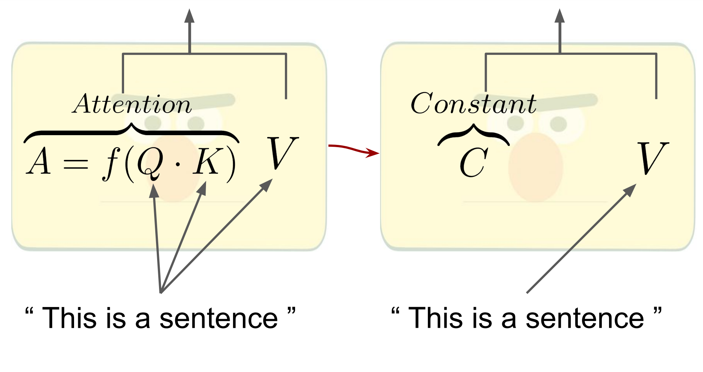
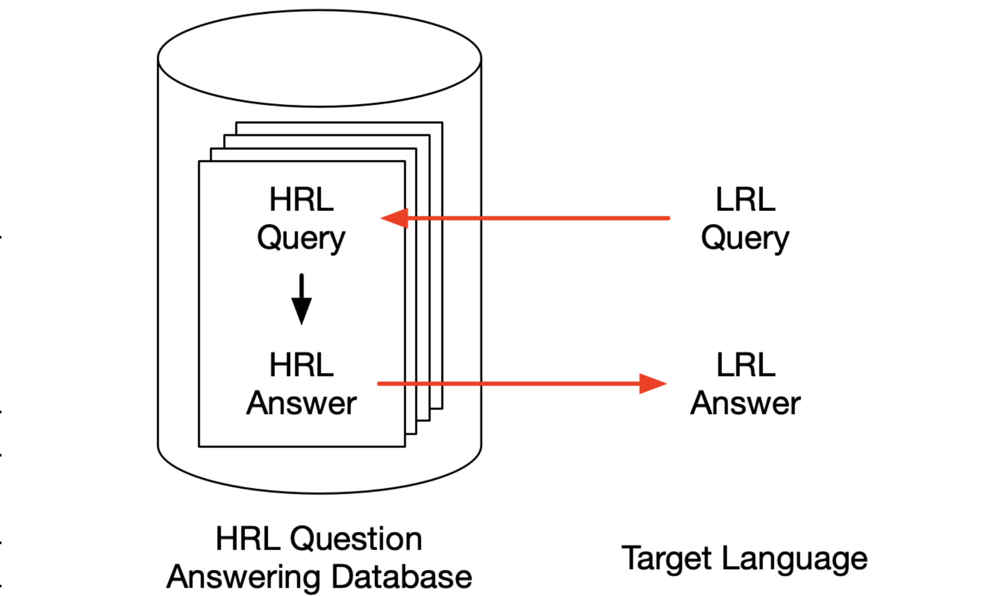

Hi!
I'm Ivan! I'm a Machine Learning Engineer at Apple working on question answering for Siri.I got my Master's and Bachelor's in computer science at the University of Washington, where I did research in Noah's ARK to help computers efficiently learn from language. I've also done natural language processing and computer vision research at Apple, Google, and Facebook. More detailed information can be found on my curriculum vitae.
News
[Oct 2022] Our (Noah's ARK) paper, How Much Does Attention Actually Attend? Questioning the Importance of Attention in Pretrained Transformers, was accepted into Findings of EMNLP 2022![Sep 2022] Began at Apple as a Machine Learning Engineer on the Siri AI/ML team!
[May 2022] Our (Apple) paper, Pivot Through English: Reliably Answering Multilingual Questions without Document Retrieval, was accepted into the MIA Workshop at NAACL 2022!
Older news
[Apr 2022] Began as a Teaching Assistant for the Spring Computer Vision course at UW![Jan 2022] Began as a Teaching Assistant for the Winter Natural Language Processing course at UW!
[Oct 2021] Began as a Teaching Assistant for the Autumn Deep Learning course at UW!
[Aug 2021] Our (Noah's ARK) paper, Sentence Bottleneck Autoencoders from Transformer Language Models, was accepted into EMNLP 2021!
[Jun 2021] Began at Apple as a Research Intern working on unsupervised representation learning for retrieval on the Siri AI/ML team!
[Jun 2021] Completed my Bachelor's in Computer Science at the University of Washington!
[Dec 2020] Our (Apple) preprint, Pivot Through English: Reliably Answering Multilingual Questions without Document Retrieval, is now available!
[Sep 2020] Our (Noah's ARK) paper, Plug and Play Autoencoders for Conditional Text Generation, was accepted into EMNLP 2020!
[Sep 2020] Began at Facebook as a Software Engineering Intern working on improving image search representations on the Visual Search Relevance team!
[Jun 2020] Began at Google as a Software Engineering Intern working on optimizing embedding retrieval for search in Google Research!
[Mar 2020] Began at Apple as a Research Intern working on multilingual question answering on the Siri AI/ML team!
[Jan 2020] Began as a Teaching Assistant for the Winter Machine Learning course at UW!
[Sep 2019] Began as a Teaching Assistant for the Autumn Machine Learning course at UW!
[Jun 2019] Began at Google as a Software Engineering Intern working on billboard detection and physical metric inference on the Ads team!
[Apr 2019] Began as a Teaching Assistant for the Spring Software Design and Implementation course at UW!
[Jun 2018] Began at Google as a Engineering Practicum Intern working on image clustering in Google Research!
Publications


[abs] [pdf]
Pivot Through English: Reliably Answering Multilingual Questions without Document Retrieval
Workshop on Multilingual Information Access (MIA) at NAACL 2022[abs] [pdf]